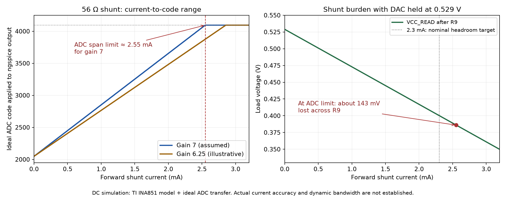

Nominal forward range: 0 to 2.55 mA. ngspice reaches the ADC's +1 V differential boundary at 2.5501 mA. An upper target of 2.3 mA leaves about 10% nominal span headroom. This is a simulated sensing range, not a hardware current-limit or accuracy guarantee.

VADC,signal = I × 56 × 7 = 392 I (volts for current in amperes). The ADC's nominal differential span is −1 to +1 V; zero input is code 2048. The positive half uses about 2048 codes. Imax ≈ 1 / 392 = 2.551 mA; one code = (2/4096)/392 = 1.2456 µA.
| Current (µA) | R9 drop (mV) | U10 ideal signal (mV) | ADC code, zero offset | Status |
|---|---|---|---|---|
| 0 | 0.000 | 0.000 | 2048 | In range |
| 1 | 0.056 | 0.392 | 2049 | In range |
| 5 | 0.280 | 1.960 | 2052 | In range |
| 10 | 0.560 | 3.920 | 2056 | In range |
| 50 | 2.800 | 19.600 | 2088 | In range |
| 100 | 5.600 | 39.200 | 2128 | In range |
| 143 | 8.008 | 56.056 | 2163 | In range |
| 500 | 28.000 | 196.000 | 2449 | In range |
| 1000 | 56.000 | 392.000 | 2851 | In range |
| 2000 | 112.000 | 784.000 | 3654 | In range |
| 2300 | 128.800 | 901.600 | 3894 | In range |
| 2500 | 140.000 | 980.000 | 4055 | In range |
| 2551 | 142.856 | 999.992 | 4095 | In range |
| 3000 | 168.000 | 1176.000 | 4095 | Clipped |
The last stable 205-sample capture had standard deviation 1.652 counts. At nominal gain7 this is approximately 2.06 µA RMS; three standard deviations correspond to 6.18 µA. These are short-capture noise estimates, not guaranteed minimum measurable currents. One-count resolution is not one-count accuracy.
Zero-offset calibration is needed for small absolute currents. The ADC datasheet's typical ±0.2%FS and maximum ±1.25%FS offsets correspond to approximately ±10.2 µA and ±63.8 µA at nominal gain7, before including amplifier, shunt and reference errors. Averaging steady DC can reduce uncorrelated random noise, but cannot remove systematic offset/gain errors; no averaging improvement was measured here.
At 2.55 mA the shunt drops approximately 143 mV, leaving about 0.386 V at the load if the DAC holds 0.529 V. If only 10 mV drop is acceptable, current is limited to 179 µA; 50 mV allows 893 µA. These load-voltage requirements may be stricter than the ADC range.
If the actual gain were 6.25, the nominal span limit would instead be 2.857 mA and one count 1.395 µA. That gain is included only as sensitivity analysis from the approximate meter ratio; it is not a calibrated gain. No FPGA, ADC, DAC or FMC settings were changed for this simulation.
TI INA851 preliminary PSpice macro-model in ngspice 46, +12/−3 V supplies, 1.5 V output common mode, 0/3.3 V clamp rails, 150 Ω input/output series resistors. Ideal static ADS5282 transfer; no transistor-level ADC, sampling kickback, real DAC current-limit or system noise simulation. DC only; 10 MSPS does not establish flat response to 5 MHz current signals.
INA851 datasheet · ADS5282 specifications · Summary and assumptions · ngspice netlist · Sweep data